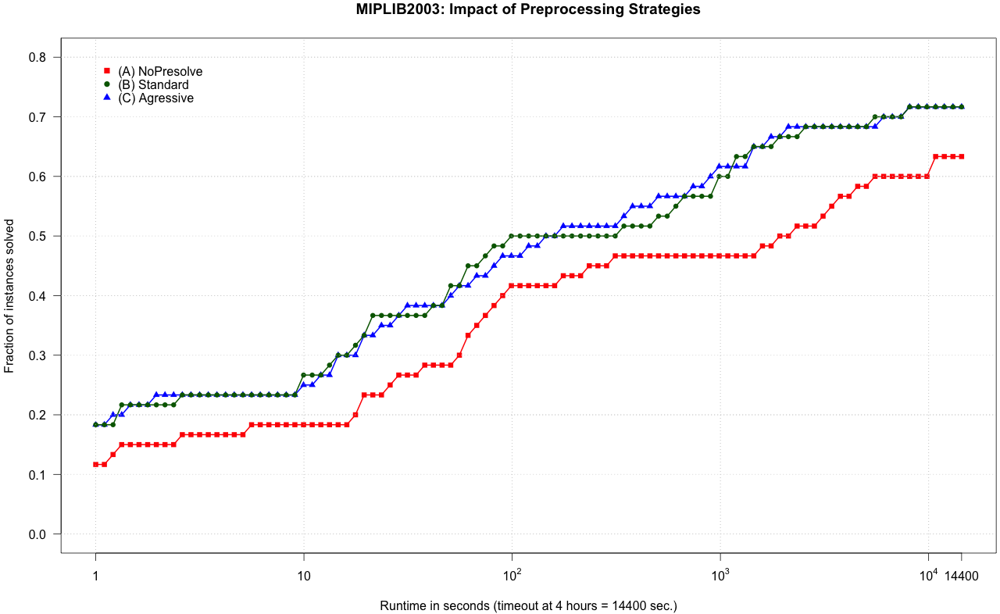

What do you know about preprocessing for Mixed Integer Programming (MIP) problems?
After a nice chat with Bo Jensen, CEO, founder, and co-owner (really, he is a Rocket Scientist!) at Sulum Optimization, I realised that I know barely anything.
By definition, we have that:
“Presolving is a way to transform the given problem instance into an equivalent instance that is (hopefully) easier to solve.” (see, chap. 10 in Tobias Achterberg’s Thesis)
All I know is that every MIP solver has a Presolve parameter, which can take different values. For instance, Gurobi has three possible values for that parameter (you can find more details on the Gurobi online manual):
- Presolve=0: no presolve at all
- Presolve=1: standard presolve
- Presolve=2: aggressive presolve: “More aggressive application of presolve takes more time, but can sometimes lead to a significantly tighter model.”
However, I can’t tell you the real impact of that parameter on the overall solution process of a MIP instance. Thus, here we go: let me write a new post that addresses this basic question!
How to measure the Impact of Preprocessing?
To measure the impact of preprocessing we need four ingredients:
- A MIP solver
- A Data set
- Computer power
- A method to measure the impact of preprocessing
Changing one of the ingredients could give you different results, but, hopefully, the big picture will not change too much.
As a solver, I have selected the current release of Gurobi (i.e., version 5.6.2). For the data set, likely the most critical ingredient, I have used the MIPLIB2003, basically because I had already all the 60 instances on my server. For running the test I have used an old cluster from the Math Department of University of Pavia.
The measure of impact I have decided to use (after considering other alternatives) is quite conservative: the fraction of closed instances as a function of runtime.
During the last weekend, I have collected a bunch of logs for the 60 instances of the MIPLIB2003, and, then, using RStudio, I have draw the following cumulative plot:

The picture is as simple as clear:
Preprocessing does always pay-off and permits to solve around 10% more of the instances within the same time limit!
In this post, I will not discuss additional technical details, but I just want to add two observations:
- Standard preprocessing has removed in average 20.3% of nonzero entries of the original model, while aggressive preprocessing has removed 22.5% of nonzero entries, only a few more.
- The average MIP gaps as reported by Gurobi at timeout are: no-presolve = 13.44%, standard = 9.08%, and aggressive = 11.02%.
Likely, the aggressive presolve setting has been decided by Gurobi using a different, much larger, and customer-oriented dataset.
Open Questions
Indeed, preprocessing is a very important feature of a modern MIP solver as Gurobi. Investing few seconds before starting the branch-and-bound MIP search can save a significant amount of runtime. However, a more aggressive preprocessing strategy does not seem to payoff, in average, on the MIPLIB2003.
Unfortunately, preprocessing is somehow disregarded from the research community. There are few recent papers dealing with preprocessing (“ehi! if you do have one, please, let me know about it, ok?”). Most of papers are from the 90s and about Linear Programming, i.e., without integer variables, which mess up everything.
Here a list of basic questions I have in mind:
- If cutting planes are used to approximate the convex hull of an Integer Problem, preprocessing for what is used for, really?
- Preprocessing techniques have been designed considering a trade-off between efficiency and efficacy (see, MWP Savelsbergh, Preprocessing and Probing Techniques for MIP problems, Journal of Computing, vol6(4) 445-454, 1995). With recent progress in software and hardware technologies, can we revise this trade-off in favor of efficacy?
- Preprocessing techniques used for Linear Programming are effective when applied to LP relaxations of Integer Problems?
- Should preprocessing sparsify the coefficient matrix?
- Using the more recent MIPLIB2010 should we expect much different results?
- Which is a better method to measure the impact of preprocessing on a collection of instances?
If you want to share your idea, experience, or opinion, with respect to these questions, you could comment below or send me an email.
Now, to conclude, my bonus question:
Do you have any new smart idea for improving preprocessing?
Well, if you had, I guess you would at least write a paper about, but, do not go for a patent, please!